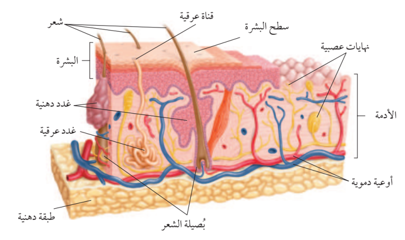
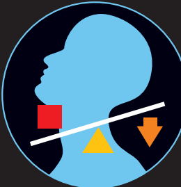

📖 الدرس: الدرس 1: الجلد والعضلات
Grade 8 - Semester 2 Science • 3 Scientific Diagram(s)

📝 Question 1: Short Question (سؤال قصير)
What is the outermost layer of the skin called?
Answer: The outermost layer of the skin is called the epidermis (البشرة).
🔘 Question 2: Multiple Choice (اختيار من متعدد)
🔍 Diagram-Based
Which structure is responsible for producing sebum in the skin?
Correct Option: (A) • غدد دهنية (Sebaceous Glands) are specifically responsible for secreting sebum, which lubricates the skin and hair.
💡 Question 3: Scientific Reasoning (سؤال تعليلي)
Explain the role of the dermis in the structure of the skin.
Explanation: The dermis (الأدمة) is the layer of skin located beneath the epidermis. It plays a crucial role in providing structural support and elasticity to the skin. The dermis contains various important structures, including blood vessels that supply nutrients, nerve endings that provide sensory information, and glands such as sebaceous and sweat glands that help regulate temperature and moisture. This layer is essential for the overall health and function of the skin.

📝 Question 1: Short Question (سؤال قصير)
What is the role of the fulcrum in a lever system?
Answer: The fulcrum acts as the pivot point around which the lever rotates.
🔘 Question 2: Multiple Choice (اختيار من متعدد)
🔍 Diagram-Based
In the lever system depicted in the diagram, what does the red square represent?
Correct Option: (A) • The red square is positioned on the lever line to the left of the fulcrum, indicating it represents the effort or input force in the lever system.
💡 Question 3: Scientific Reasoning (سؤال تعليلي)
How does the lever system in the human body facilitate movement?
Explanation: The lever system allows muscles to exert force on bones, enabling movement. The effort applied by the muscles is transferred through the lever (the bones) to lift or move the load (the body part), with the fulcrum providing a pivot point for this action.

📝 Question 1: Short Question (سؤال قصير)
What does the yellow triangle in the diagram represent?
Answer: The yellow triangle represents the fulcrum or pivot point in the lever system.
🔘 Question 2: Multiple Choice (اختيار من متعدد)
🔍 Diagram-Based
What does the orange arrow in the diagram indicate?
Correct Option: (A) • The orange arrow indicates the direction of the applied force or effort being exerted to lift the object.
💡 Question 3: Scientific Reasoning (سؤال تعليلي)
Explain how the lever system in the diagram helps in lifting an object.
Explanation: The lever system allows the arm to lift an object by using the fulcrum as a pivot point. When force is applied at the hand (indicated by the red square), the arm acts as a lever. The distance from the fulcrum to the point where the force is applied (the hand) determines the mechanical advantage, allowing the person to lift heavier weights with less effort.